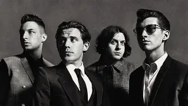

Biografía
La banda se formó en 2002 en High Green, un suburbio de Sheffield, Inglaterra, y rápidamente ganó notoriedad gracias a su presencia en internet, especialmente en MySpace
Información detallada
- Alex Turner: vocalista principal y guitarrista.
- Jamie Cook: guitarrista.
- Matt Helders: baterista.
- Andy Nicholson: bajista original, quien fue reemplazado posteriormente por Nick O'Malley.
